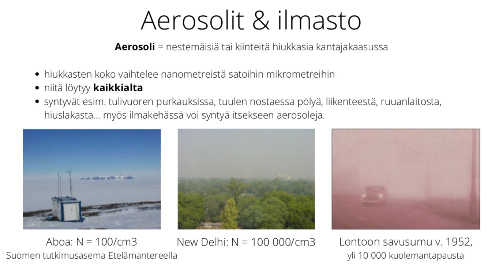
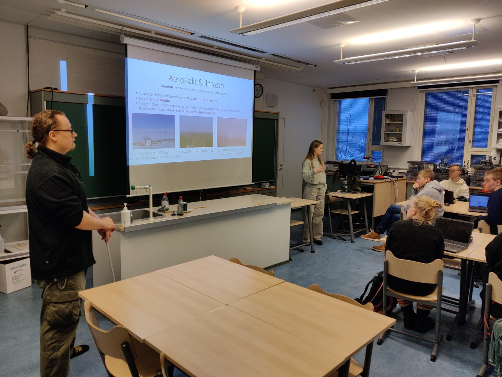

Aerosoli-työpaja 2022
Aerosoli-työpaja 2022#
Järjestimme kahden oppitunnin mittaisen työpajan joulukuussa 2022 Kaurialan lukiolla. Teemaksi valikoitui aerosolit – nämä veikeät nestemäiset tai kiinteät hiukkaset, jotka leijailevat osana meidän hengitettävää ilmaa. Työpaja järjestettiin Kaurialan tiedelinjan ensimmäisen vuosikurssin opiskelijoille.
Näiden oppituntien materiaali on löydettävissä täältä ja materiaaleja saa käyttää ja muokata vapaasti.
Työpajan perusideana oli tutustua aerosoleihin varsin tutkimuslähtöisesti – mistä oikein on kyse, miten aerosolit vaikuttavat meihin ja maapalloon, miksi tiedeyhteisö on varsin kiinnostunut tutkimaan aihetta ja minkälaista avointa dataa aiheesta on löydettävissä. Opiskelijat pääsivät pienryhmissä vastaamaan valitsemiinsa tutkimuskysymyksiin avoimen datan avulla, jonka jälkeen lopputulokset esiteltiin muulle luokalle. Tutkimuskysymysten aiheet käsittelivät esimerkiksi ilmansaasteiden määriin liittyviä kysymyksiä, ilmansaasteiden terveysvaikutuksia sekä valtiotasoisia muutoksia pienhiukkaspäästöissä.

Aerosoleihin liittyy hyvin kahtiajakautuneet tuntemukset. Toisella puolella vaakaa on hyvin ikävät terveysvaikutukset, jotka me kaikki tunnetaan arkipäiväisesti ilmansaasteiden aiheuttamina terveysongelmina. Toisaalta aerosolit nykytietämyksen mukaan viilentävät meidän ilmastoa, mikä on tällä hetkellä äärimmäisen arvokasta, eikä esimerkiksi pilvien muodostuminen nykyisellä tavalla olisi mahdollista ilman aerosoleja.
Työpajan kulku lyhyesti
Oppilaita oli noin 30, jotka jaettiin 3-4 hengen ryhmiin. Suurimmalla osalla ei ollut isompaa ohjelmointitaustaa, eikä sitä tähän työpajaan vaaditakaan.
Ensimmäisellä oppitunnilla vartin intro-luento aerosoleista, tehtävän ohjeistus ja työskentelyn aloitus.
Toisella oppitunnilla kerrataan tehtävän suoritus toistamalla ohjelmointiprosessi kokonaisuudessaan, jonka jälkeen tehdään ryhmätyöt loppuun. Tavoitteena saada ulos kuvaaja, joka vastaa ryhmän valitsemaan tutkimuskysymykseen.
Kolmannella oppitunnilla (valinnainen) ryhmät esittelevät omat lopputulokset ja kuvaajan luokalle.
Miten meni?
Erittäin hyvin! Opiskelijat saivat valita ryhmissä heitä kiinnostavan tutkimuskysymyksen ja siihen sopivan datasetin. Tehtävän ohjeistuksessa annettu esimerkkitehtävä ja datasettien kylkeen lisätyt lisäohjeet mahdollistivat sen, että oppilaat pystyivät suhteellisen hyvin itsenäiseen työskentelyyn. Tietysti ohjeistusta tarvittiin matkan varrella, mutta kaikki ryhmät pääsivät helposti maaliin. Suurin osa ryhmistä kerkesi jopa lisätä itsenäisesti ‘ylimääräistä’ dataa heidän kuvaajiinsa, mikä oli mahtava juttu.
Palaute opiskelijoilta ja opettajilta oli varsin positiivinen, ja osa opiskelijoista kommentoi aiheen ja datan parissa työskentelyn olevan kiinnostavaa.
Ajatuksia työpajasta
Monesti sekä opiskelijoita että opettajia jännittää, että onko ohjelmoinnin hyödyntäminen työkaluna liian vaikeaa tai monimutkaista, mikä on erittäin ymmärrettävää. Tämä kahden oppitunnin mittainen vierailu Kaurialan lukiolla kuitenkin näyttää vihreää valoa sille, että tarpeeksi selkeillä ja suoraviivaisilla materiaaleilla opiskelijat kerkevät päästä lyhyessäkin ajassa itsenäisen työskentelyn makuun, ja lopputulokset olivat hienoja. Jopa yksittäisten ryhmien sisällä opiskelijat olivat muokanneet tutkimuskysymyksiä omien mielenkiintojensa mukaan, esimerkiksi valitsemalla keskenään eri valtioiden tiedot tarkasteltavaksi samasta aiheesta. WAU.
Omasta mielestäni ehdottoman iso plussa oli se, että meidän etukäteen valitsemat datasetit ja tutkimuskysymykset mahdollistivat sen, että jokainen työprosessi eteni pääpiirteittäin samalla tavalla. Tällöin ryhmien ohjaus ja ongelmien paikallistaminen onnistui sujuvasti ja työt valmistuivat varsin nopeasti. Opiskelijat pystyivät myös jakamaan tietämystä ryhmän kesken ja ratkomaan ongelmia yhdessä ohjeiden avulla. Tietysti osalla opiskelijoista oli enemmän ohjelmointikokemusta, minkä voisi hyödyntää esimerkiksi vaativimmilla tutkimuskysymyksillä (esimerkiksi tutkimuskysymys nro 3, jossa vertaillaan kahden eri kuukauden tietoja keskenään). Jokaiseen listattuun kysymykseen pystyy kuitenkin lisäämään dataa, joko alkuperäisestä datasetistä tai hyödyntämällä muita aineistoja, ja sitä kautta jopa kehittämään tutkimuskysymystä eteenpäin, jos jokin ryhmä saa tehtävän valmiiksi hyvissä ajoin.
Toivottavasti meidän kokemukset inspiroivat teitä kokeilemaan jotain samanlaista,
Terkkuin,
Veera Juntunen
Tutkimusharjoittelija,
Fysiikan tutkimuslaitos HIP
